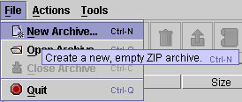
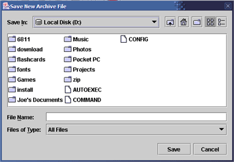
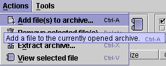
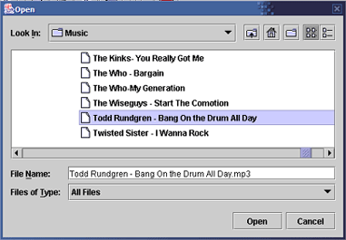
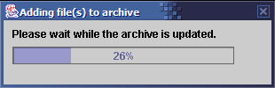
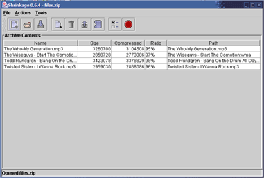
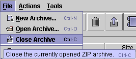

In addition to extracting existing archives, Shrinkage can create new archives and add to them.
Note: As of this release, Shrinkage only works with ZIP archives.
|  | 1. Choose "New Archive..." from the File menu. |
|  | 2. A dialog will pop up, asking you to choose a path and filename to save the new archive file. Navigate to the desired directory, type a name for the archive file, and click Save. This will create and open a new, empty archive file. |
|  | 3. Now we need to add files to the archive we've just created. Select "Add file(s) to archive..." from the Actions menu. |
|  | 4. Select the file or files you wish to add. Multiple selections can be made by holding down the CTRL key. When you have selected the file(s) you wish to add, click "Open". |
|  | 5. The progress bar keeps you informed as the files are added to the archive. |
|  | 6. Once the operation completes, the main window is updated with a list of the files that have now been added. There is no need to explicitly "save" the archive - the archive file is saved automatically as files are added. Continue adding files in this manner. |
|  | 7. When you are finished adding files, choose "Close Archive" from the File menu to close the archive. |